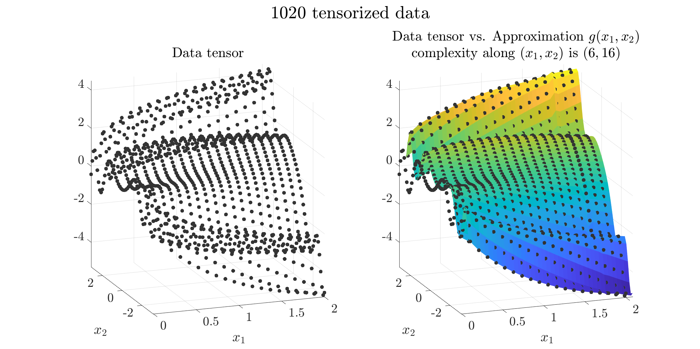
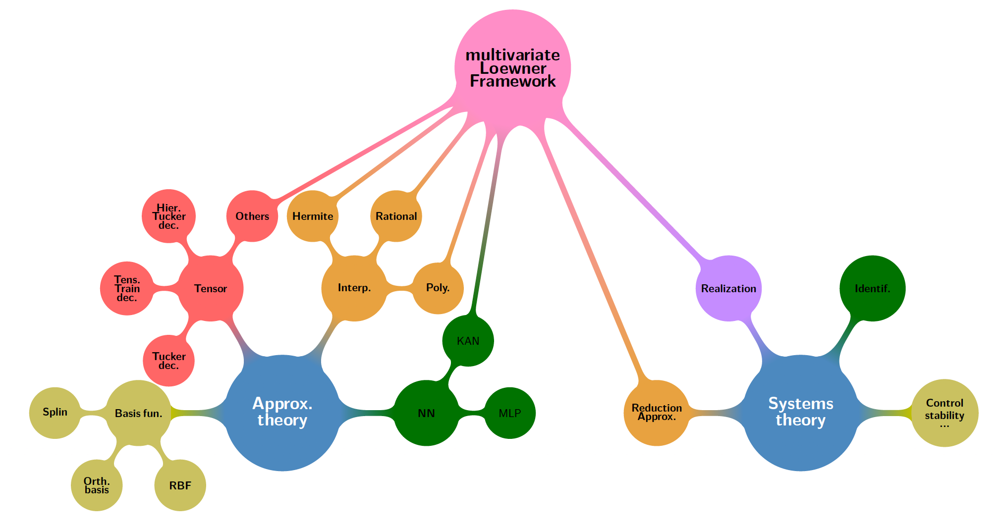

mLF (multivariate Loewner Framework)
Overview
The mLF package implements - in MATLAB language - the Loewner framework for tensor-based multivariate rational modeling.
It provides an open source and turnkey package to implement the features introduced in the original article by A.C. Antoulas, I-V. Gosea and C. Poussot-Vassal, "On the Loewner framework, the Kolmogorov superposition theorem, and the curse of dimensionality", in SIAM Review (Research Spotlight), Vol. 67(4), pp. 737-770, November 2025 [arXiv].
The mLF package allows constructing a $n$-variable rational function approximating a $n$-dimensional tensor (either real or complex valued).
It is suited to approximate, from any $n$-dimensional tensor, (i) $n$-variable static functions, and/or (ii) $n$-variable parametrized dynamical systems.

Illustration of a 2-variables tensorized data-based model construction.
Raw data (left) and its rational approximation obtained with
mLF (right).Contributions and main functionalities highlights
mLFachieves multivariate rational model construction directly from tensorized data;mLFallows constructing generalized realization form for rational functions in $n$-variables (in the Lagrange basis);mLFachieves variables decoupling; thus connecting the Loewner framework for rational interpolation of multivariate functions and the Kolmogorov Superposition Theorem (KST), restricted to rational functions;mLFconnects the approximation theory with systems and realization theories.

The multivariate Loewner framework is at the interface of dynamical systems and approximation theories.